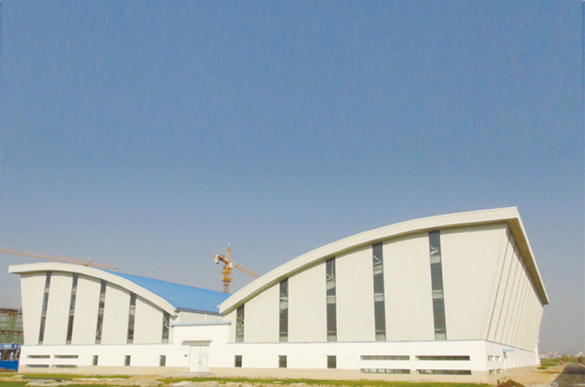
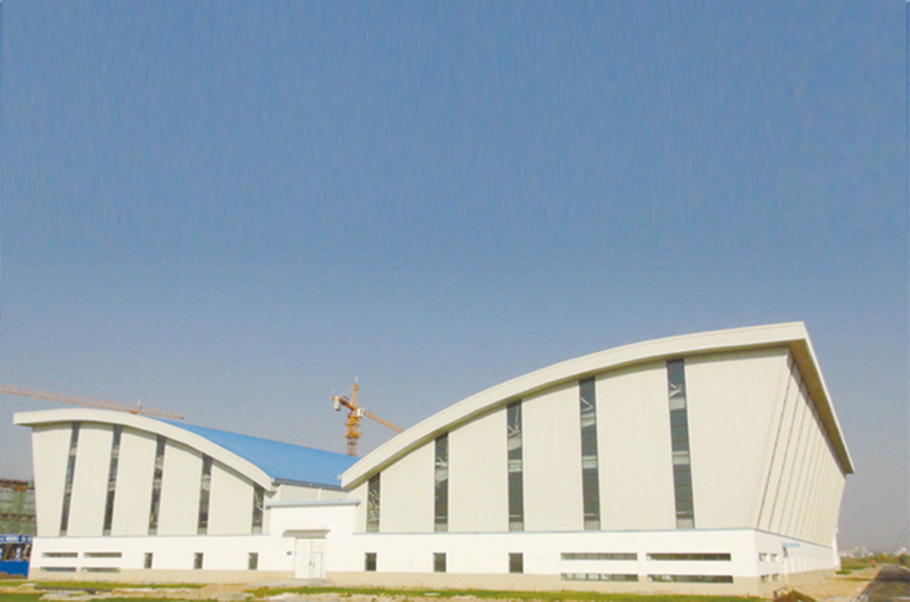

宁东水务有限责任公司
宁夏水务投资集团有限公司
 

宁东供水工程是宁东能源化工基地最重要的配套基础设施。工程从2003年12月开工建设，2005年6月正式供水。供水主体工程主要包括水源工程和净配水工程两部分，水源工程从黄河取水，由两级泵站、22.2公里DN2200输水管道、2.2公里隧洞和一座库容4407万立方米的调蓄水库组成。净配水工程包括两座净化水处理厂和加压泵站及园区200余公里供水管网工程。
宁东水务有限责任公司是经自治区政府批准，于2003 年12月由自治区水利厅出资与山东鲁能、神华宁煤和宁夏发电4家股东共同投资组建的有限责任公司，承担着宁东供水工程的工程建设和运营管理任务。目前，公司由宁夏水务投资集团有限公司控股，其他3家股东单位为神华国能宁夏煤电有限公司、神华宁夏煤业集团有限公司、宁夏宁东开发投资有限公司。公司机关设发展规划部等7部1室，基层下设客服中心等9个运行单位，现有员工167人。
经过12年的历程和发展，目前宁东供水工程水源工程已具备日输黄河原水110万吨的能力，调蓄水库库容4407万立方米，两座净化水厂具备日供工业、生活用水80万吨，绿化泵站日供水10万吨的供水能力，出厂水达到国家生活饮用水106项指标要求，2016年年供水量近1.3亿吨，截止目前2017年日最大供水已达到68.4万吨，基地用水户已达160余家，城镇居民生活用水7万余人，生态林地绿化供水面积18万亩，已累计向宁东能源化工基地供水近11亿吨。
宁东供水工程的建成投运，为宁东基地的生产生活、生态保护，乃至宁夏全区工业产业布局、特色经济园区域经济发展提供了强有力的水资源保障，发挥了十分重要的作用。